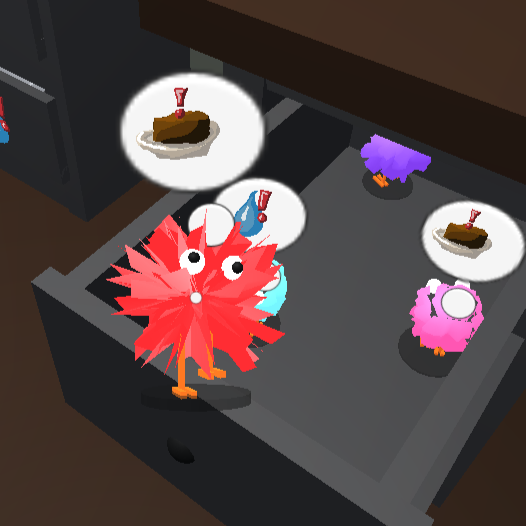

Personal Portfolio Website
Feb 2025 - Present
HTML, CSS
I designed this website using HTML and CSS, hosted on GitHub Pages. The website hosts my Computer Science and Visual Arts portfolios and is responsive to different screen resolutions and orientations. It makes use of CSS transforms and viewport-percentage coordinates to position and size decorative text within the background images. The design is inspired by early 20th century Bauhaus design principles.The GitHub repository is availible here.

Low Level Development - Personal Study
March 2024 - Present
Intel x86, C
I started a low level development project in my spare time to learn more about how computers work at a low level. Using Intel's x86 software development manual (SDM) as a reference, the project began with writing 16-bit real mode programs directly in the MBR partition on a hard drive, one of which is a bootloader program that loads in and runs 64 bit protected mode programs from the disk. Future plans involve creating a very simple operating system to run and schedule multiple programs.The project's Github repository is availible here.

Raytracer
March 2025
C++, OpenGL
As part of my Computer Graphics courses, I implemented a CPU raytracer in C++ from scratch. The program reads in an input file of commands that sets up the scene data, then raytraces a scene based off of it. The code involves casting rays, anti-aliasing, detecting intersections with geometries in the scene, and calculating the new directions and lighting of rays along multiple bounces. Due to academic integrity policies, I am not permitted to publish the source code on GitHub, but you can click learn more to see a portfolio of images rendered by the raytracer.
Shaders and Computer Graphics
Jan 2025 - March 2025
C++, OpenGL, GLSL
I wrote shaders that calculate Phong shading (diffuse, ambient, and specular) in GLSL, as well as a Mandelbrot fragment shader that renders the mandelbrot fractal on a sqaure. I also wrote a matrix stack program in C++ using OpenGL that uses a tree structure to organize scene objects and geometries, then calculates model-view and perspective matrices along a traversal of that tree.
Human Powered Submarine Club - Electronics
Nov 2024 - Present
Arduino (C++), CAD
I joined UCSD's Human Powered Submarine club's electronic team. I impemented a sensor to measure and display the RPM of the sub's propellor using an arduino with a Hall effect sensor and a 3D-printed cuff containing magnets of alternating polarity. The hall effect sensor measures the magnetic strength of the magnet cuff as it's turning, and is able to detect each time a magnet passes by it. Using this, the arduino then calculates an RPM and sends that to an LCD screen which displays information on the sub's sensors. Because the Hall effect sensor needs a fast response time, I implemented a scheduler in the arduino that allows the RPM sensor to do a calculation using the whole CPU for a number of frames, then allows the other sensors to do their respective jobs for a number of frames, alternating. I also designed and 3D-printed a mount for the sensor using CAD.The files can be found at this Github repository, {LINK}
Blender Scripting - SVG File Generation
Nov 2024
Python Blender API, Processing 4 (java), JSON
I wrote scripts that take data from a 3D model in Blender and generate an SVG image of the model's triangles with numbered vertices. A laser cutter can use the SVG file to cut out and engrave thin triangles that can be assembled into a physical, to-scale sculpture of the original 3D model. I used it to laser cut a 3D model out of plywood, which I assembled together as the frame of a project for my sculpture studio.